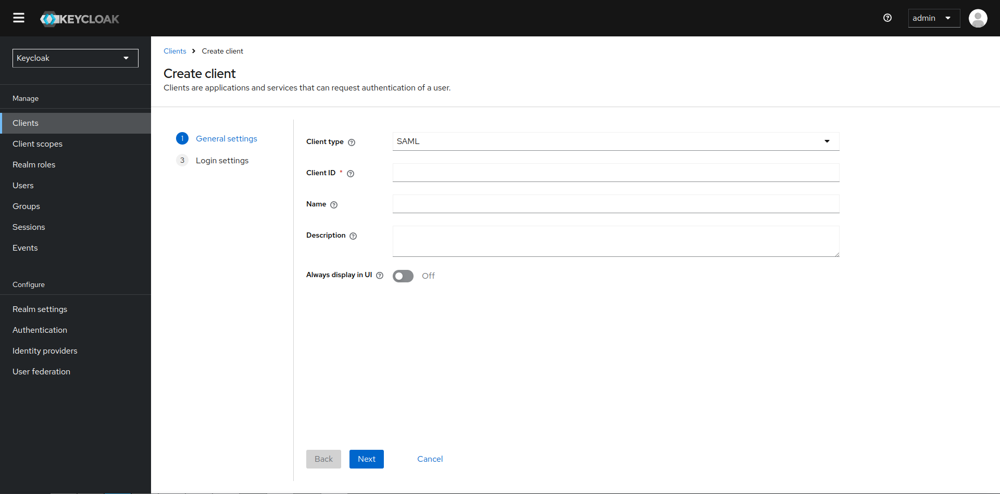
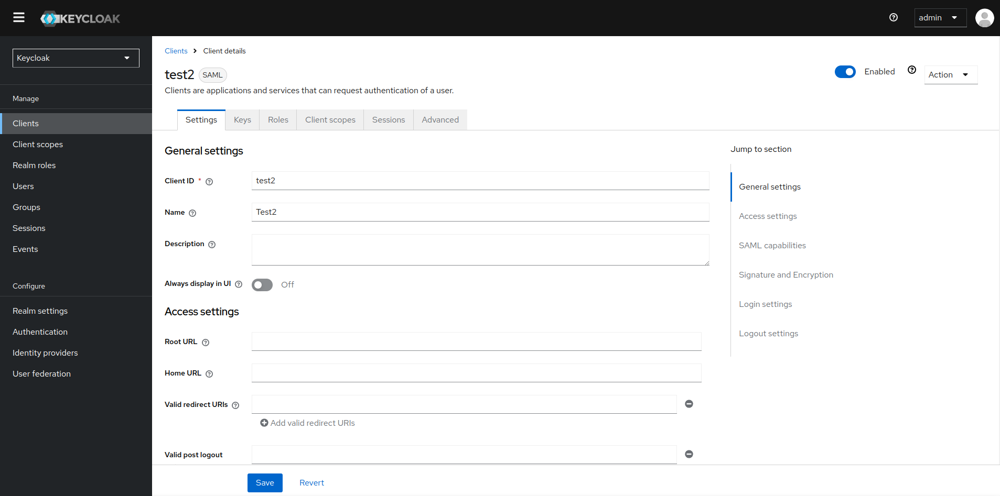

Clientes SAML
GEstion de Clientes SAML
SAML (Security Assertion Markup Language) es un protocolo popular para asegurar aplicaciones, especialmente en entornos empresariales. Fue diseñado para permitir el intercambio seguro de información de autenticación y autorización entre un proveedor de identidad (IdP) y un proveedor de servicios (SP), siendo ampliamente compatible con aplicaciones web tradicionales y de empresa.
Creación de un cliente SAML
Keycloak es compatible con SAML 2.0 para aplicaciones registradas. Se admiten enlaces POST y Redirect. Puedes elegir requerir la validación de la firma del cliente. También puedes hacer que el servidor firme y/o cifre las respuestas.
-
Haz clic en Clients en el menú.
-
Haz clic en Create client para ir a la página de Crear cliente.
-
Establece el Client type en SAML.

-
Introduce el Client ID. A menudo, este es un URL y es el valor esperado del emisor en las solicitudes SAML enviadas por la aplicación.
-
Haz clic en Next y luego en Save. Esta acción crea el cliente y te lleva a la pestaña Configuración.
Las siguientes secciones describen cada configuración en esta pestaña.
Pestaña Configuración
La pestaña Configuración incluye muchas opciones para configurar este cliente.

Configuraciones generales
-
Client ID: La cadena alfanumérica que se usa en las solicitudes OIDC y en la base de datos de Keycloak para identificar al cliente. Este valor debe coincidir con el valor del emisor enviado con AuthNRequests. Keycloak extrae el emisor de la solicitud SAML de Authn y lo compara con un cliente usando este valor.
-
Name: El nombre del cliente en la pantalla de UI de Keycloak. Para localizar el nombre, configura un valor de cadena de reemplazo. Por ejemplo, un valor de cadena como ${miapp}. Consulta la Guía del desarrollador del servidor para obtener más información.
-
Description: La descripción del cliente. Esta configuración también se puede localizar.
-
Always Display in Console: Listar siempre este cliente en la Consola de cuentas, incluso si este usuario no tiene una sesión activa.
Configuraciones de acceso
-
Root URL: Cuando Keycloak utiliza un URL relativo configurado, este valor se antepone al URL.
-
Home URL: Si Keycloak necesita enlazar con un cliente, se usa esta URL.
-
Valid Redirect URIs: Introduce un patrón de URL y haz clic en el signo + para agregar. Haz clic en el signo - para eliminar. Haz clic en Guardar para guardar estos cambios. Los valores de comodín solo se permiten al final de una URL. Por ejemplo, http://host.com/*$$. Este campo se utiliza cuando los puntos finales SAML exactos no están registrados y Keycloak extrae la URL del consumidor de afirmaciones de una solicitud.
-
IDP-Initiated SSO URL name: Nombre de fragmento de URL para hacer referencia al cliente cuando se desee realizar un SSO iniciado por IDP. Dejar este campo vacío deshabilitará el SSO iniciado por IDP. El URL que se referenciará desde el navegador será: server-root/realms/{realm}/protocol/saml/clients/{client-url-name}
-
IDP Initiated SSO Relay State: Estado de relay que se desea enviar con la solicitud SAML cuando se desee realizar un SSO iniciado por IDP.
-
Master SAML Processing URL: Esta URL se utiliza para todas las solicitudes SAML y la respuesta se dirige al SP. Se utiliza como la URL del Servicio de Consumidor de Afirmaciones y la URL del Servicio de Cierre de Sesión Único.
Note
Si las solicitudes de inicio de sesión contienen la URL del Servicio de Consumidor de Afirmaciones, esas solicitudes de inicio de sesión tendrán prioridad. Esta URL debe ser validada por un patrón de URL de redirección válida registrado.
Capacidades SAML
-
Name ID Format: El Formato de ID de Nombre para el sujeto. Este formato se utiliza si no se especifica ninguna política de ID de nombre en una solicitud, o si el atributo Forzar Formato de ID de Nombre está activado.
-
Force Name ID Format: Si una solicitud tiene una política de ID de nombre, ignórala y usa el valor configurado en la consola de administración bajo Formato de ID de Nombre.
-
Force POST Binding: De forma predeterminada, Keycloak responde utilizando el binding SAML inicial de la solicitud original. Al habilitar Forzar binding POST, Keycloak responde utilizando el binding POST de SAML, incluso si la solicitud original utilizó el binding de redirección.
-
Force artifact binding: Si está habilitado, los mensajes de respuesta se devuelven al cliente a través del sistema de binding de artefactos SAML.
-
Include AuthnStatement: Las respuestas de inicio de sesión SAML pueden especificar el método de autenticación utilizado, como la contraseña, así como las marcas de tiempo del inicio de sesión y la expiración de la sesión. Incluir AuthnStatement está habilitado de forma predeterminada, por lo que el elemento AuthnStatement se incluirá en las respuestas de inicio de sesión. Si se establece en OFF, se evita que los clientes determinen la duración máxima de la sesión, lo que puede crear sesiones de cliente que no expiren.
-
Include OneTimeUse Condition: Si está habilitado, se incluye una Condición de Un Solo Uso en las respuestas de inicio de sesión.
-
Optimize REDIRECT signing key lookup: Cuando está activado, los mensajes de protocolo SAML incluyen la extensión nativa de Keycloak. Esta extensión contiene una pista con el ID de la clave de firma. El SP utiliza la extensión para la validación de la firma en lugar de intentar validar la firma utilizando claves.
Note
Esta opción se aplica a los bindings REDIRECT donde la firma se transfiere en los parámetros de consulta y esta información no se encuentra en la información de la firma. Esto es contrario a los mensajes de binding POST donde el ID de la clave siempre se incluye en la firma del documento. Esta opción se utiliza cuando el servidor y el adaptador de Keycloak proporcionan el IDP y el SP. Esta opción solo es relevante cuando Documentos firmados está activado.
Firma y cifrado
-
Sign Documents: Cuando está activado, Keycloak firma el documento utilizando la clave privada del realm.
-
Sign Assertions: La afirmación está firmada e incrustada en la respuesta XML SAML Auth.
-
Signature Algorithm: El algoritmo utilizado para firmar documentos SAML. Ten en cuenta que los algoritmos basados en SHA1 están obsoletos y pueden ser eliminados en una versión futura. Se recomienda el uso de algún algoritmo más seguro en lugar de _SHA1. Además, con los algoritmos _SHA1, la verificación de firmas no funciona si el cliente SAML se ejecuta en Java 17 o superior.
-
SAML Signature Key Name: Los documentos SAML firmados enviados utilizando binding POST contienen la identificación de la clave de firma en el elemento KeyName. Esta acción puede ser controlada por la opción Nombre de la Clave de Firma SAML. Esta opción controla el contenido de KeyName.
-
KEY_ID: El KeyName contiene el ID de la clave. Esta opción es la opción predeterminada.
-
CERT_SUBJECT: El KeyName contiene el sujeto del certificado correspondiente a la clave del realm. Esta opción es esperada por Microsoft Active Directory Federation Services.
-
NONE: La pista de KeyName se omite completamente del mensaje SAML.
-
-
Canonicalization Method: El método de canonicalización para firmas XML.
Configuración de inicio de sesión
-
Login theme: Un tema para usar en las páginas de inicio de sesión, OTP, registro de concesiones y contraseña olvidada.
-
Consent required: Si está habilitado, los usuarios deben dar su consentimiento para el acceso del cliente. Para los clientes del lado del cliente que realizan inicios de sesión en el navegador, como no es posible garantizar que los secretos puedan mantenerse seguros con los clientes del lado del cliente, es importante restringir el acceso configurando las URLs de redirección correctas.
-
Display client on screen: Este interruptor se aplica si Consentimiento requerido está Off.
-
Off: La pantalla de consentimiento contendrá solo los consentimientos correspondientes a los alcances del cliente configurados.
-
On: También habrá un elemento en la pantalla de consentimiento sobre este cliente en sí.
-
-
Client consent screen text: Aplica si Consentimiento requerido y Mostrar cliente en pantalla están habilitados. Contiene el texto que estará en la pantalla de consentimiento sobre los permisos para este cliente.
Configuración de cierre de sesión
- Front channel logout: Si el Cierre de sesión por Canal de Frente está habilitado, la aplicación requiere una redirección del navegador para realizar un cierre de sesión. Por ejemplo, la aplicación puede requerir que se restablezca una cookie, lo que solo podría hacerse a través de una redirección. Si el Cierre de sesión por Canal de Frente está deshabilitado, Keycloak invoca una solicitud SAML en segundo plano para cerrar la sesión de la aplicación.
Pestaña Claves
-
Encrypt Assertions: Cifra las afirmaciones en documentos SAML con la clave privada del realm. El algoritmo AES utiliza un tamaño de clave de 128 bits.
-
Client Signature Required: Si la Firma del Cliente Requerida está habilitada, se espera que los documentos provenientes de un cliente estén firmados. Keycloak validará esta firma utilizando la clave pública del cliente o el certificado configurado en la pestaña Claves.
-
Allow ECP Flow: Si es verdadero, a esta aplicación se le permite utilizar el perfil ECP de SAML para la autenticación.
Pestaña Avanzado
Esta pestaña tiene muchos campos para situaciones específicas. Algunos campos se cubren en otros temas. Para obtener detalles sobre otros campos, haz clic en el ícono de interrogación.
Configuración detallada del punto final SAML
-
Logo URL: URL que hace referencia a un logotipo para la aplicación Cliente.
-
Policy URL: URL que el Cliente Parte Dependiente proporciona al Usuario Final para leer sobre cómo se utilizarán los datos del perfil.
-
Terms of Service URL: URL que el Cliente Parte Dependiente proporciona al Usuario Final para leer los términos de servicio de la Parte Dependiente.
-
Assertion Consumer Service POST Binding URL: URL de binding POST para el Servicio de Consumidor de Afirmaciones.
-
Assertion Consumer Service Redirect Binding URL: URL de binding de redirección para el Servicio de Consumidor de Afirmaciones.
-
Logout Service POST Binding URL: URL de binding POST para el Servicio de Cierre de Sesión.
-
Logout Service Redirect Binding URL: URL de binding de redirección para el Servicio de Cierre de Sesión.
-
Logout Service Artifact Binding URL: URL de binding de artefactos para el Servicio de Cierre de Sesión. Cuando se configura junto con la opción Forzar binding de artefactos, el binding de artefactos se fuerza tanto para los flujos de inicio de sesión como de cierre de sesión. El binding de artefactos no se utiliza para el cierre de sesión a menos que se establezca esta propiedad.
-
Logout Service SOAP Binding URL: URL de binding de redirección para el Servicio de Cierre de Sesión. Solo aplicable si se utiliza el cierre de sesión por canal de fondo.
-
Artifact Binding URL: URL para enviar los mensajes de artefacto HTTP.
-
Artifact Resolution Service: URL del punto final SOAP del cliente donde se enviarán los mensajes ArtifactResolve.
Para ver más información sobre la configuración de clients, consulta la documentación oficial